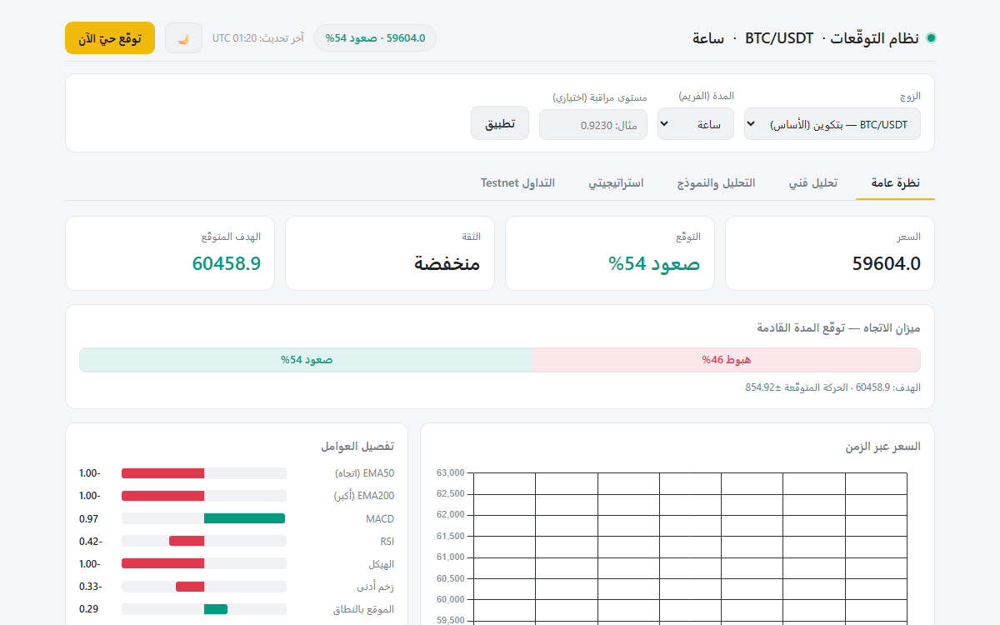

→ العودة للسيرة الذاتية

⭐ المشاريع المتميزة
نظام التوقعات والتداول — ربط باينانس
تحليل بيانات السوق اللحظية عبر واجهة برمجية خارجية مع مؤشرات وتنبيهات.
HTML5 وبناء الصفحاتJavaScript (ES6+)Node.jsتصميم واجهات REST APIs
🖥️ هذا المشروع تطبيق يعمل عبر خادم (Python/Docker)، ويُعرض هنا كنموذج
من الأعمال. النسخة العاملة متاحة في بيئة التشغيل المحلية.